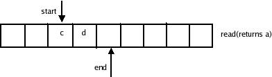

A Queue is a very similar to the way we are supposed to queue up at train reservation counters or at bank cashiers desks.A queue is a linear,sequential list of items that are accessed in the order First In First Out(FIFO).That is the first item inserted in a queue is also the first one to be accessed, and the second item inserted in a queue is also the second one to be accessed and also the last item inserted in a queue is also the last one to be accessed.We cannot store or access the items in a queue arbitrarily or in any random fashion.
Suppose that we are creating a queue of items.For this purpose let us assume two very simple functions write and read.The write function adds a new item to the queue where as read item reads one item from the queue.If wwe go on operating with these functions with a few insertions and a few retrievals the resulting values of the queue would look as shown.
As the table shows,the operations on a queue are FIFO.Also note that when one time is read from the queue,it is destroyed.Therefore,a read operation on a queue is destructive,unlike what happens with other data structures,such as linked lists.If the programmer needs to implement a non-destructive reading of a queue,the values ,as they are read(and therefore automatically removed)from the queue,must be stored somewhere else for later retrieval.
In order to implement the write and read operations of a queue,two pointers,start and end are required.One pointer(start) points at the current start of the queue.The other pointer(end) points at the current end of the queue.Thus, insertions and retrievals from a queue would have the effects on the pointers as shown.

Fig : Pointer movements because of Queue Operations.